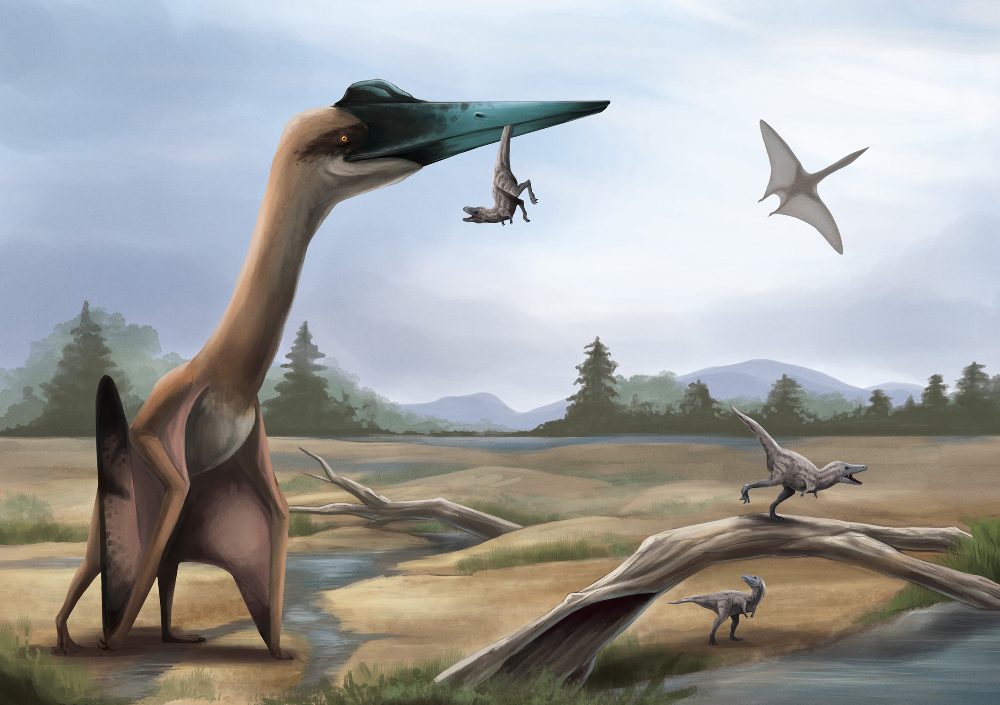
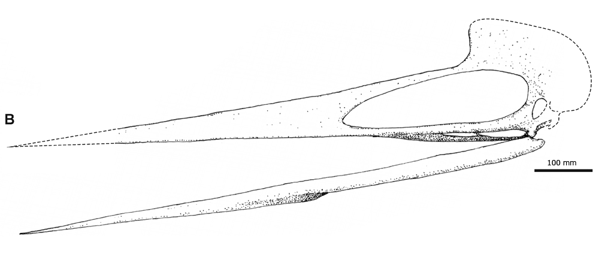
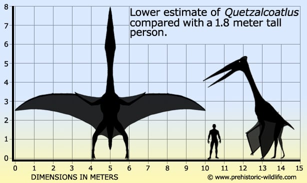
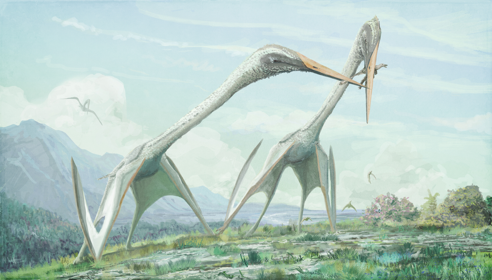

A maior criatura que já voou nestes céus.
O quetzalcoatlus (em português, quetzalcoatlo) foi um pterossauro que viveu na América do Norte, durante o Cretáceo Superior (84-65 milhões de anos). O seu nome deriva do deus asteca também chamado Quetzalcoatl, uma serpente alada. O quetzalcoatlus pertencia à família Azhdarchidae, de pterossauros sem dentes, e foi o maior animal alado da história geológica da Terra, com cerca de 12 metros de envergadura e um peso de 200 quilogramas. Outra característica deste animal era o longo pescoço. O quetzalcoatlus desapareceu na extinção chamada atualmente de K-Pg (Extinção do cretáceo para o paleogeno), com os restantes pterossauros e com os dinossauros não avianos (uma vez que as aves atuais também são dinossauros), além de diversas outras espécies. Apesar da similaridade dos nomes eles não estão proximamente relacionados as aves-do-paraíso, embora ambos sejam arcossauros.
Os primeiros fósseis de quetzalcoatlus foram descobertos no Texas por Douglas A. Lawson em 1970, em formações cretácicas. Até então, o recorde de envergadura para um animal alado pertencia ao Pteranodonte, outro pterossauro, com cerca de 10 metros. O quetzalcoatlus veio aumentar este valor. Outros fósseis encontrados, do mesmo género, sugerem envergaduras ainda maiores, na ordem dos 18 metros, mas estes não se encontram bem preservados e a comunidade científica permanece céptica quanto a estes valores. Lawson descobriu um segundo local com a mesma idade, a cerca de 40 km do primeiro, onde entre 1972 e 1974 ele e o professor Wann Langston Jr. do Texas Memorial Museum desenterraram três esqueletos fragmentários de indivíduos muito menores. Lawson em 1975 anunciou a descoberta em um artigo na Science.
Naquele mesmo ano, em uma carta subsequente ao mesmo periódico, ele fez o grande espécime original, TMM 41450-3, o holótipo de um novo gênero e espécie, Quetzalcoatlus northropi. O nome do gênero refere-se ao deus serpente emplumado asteca, Quetzalcoatl. Quetzalcoatlus northropi foi o maior animal voador que já viveu na Terra. O nome específico homenageia John Knudsen Northrop, o fundador da Northrop, que conduziu o desenvolvimento de grandes projetos de aeronaves de asas voadoras sem cauda semelhantes a quetzalcoatlus.
Através dos esqueletos conhecidos de quetzalcoatlus, não está claro qual seria o seu modo de vida e foram propostas diversas interpretações. As mais coerentes sugerem um tipo de vida semelhante às garças, marabus ou ainda como os bicos-de-tesoura, embora estudos indiquem que fosse como as cegonhas atuais. A reconstrução da anatomia e aparência do quetzalcoatlus é baseada em material fóssil, nomeadamente, algumas vértebras cervicais, parte de um osso da perna, fragmentos do crânio e os ossos de uma asa. Devido ao seu enorme tamanho, acredita-se que o quetzalcoatlus era provavelmente um planador, pois para conseguir efetuar um voo ativo, a sua musculatura peitoral teria de ser muito desenvolvida. Por esta razão, ele muito provavelmente não conseguiria levantar voo em terreno horizontal, como vemos as aves fazer hoje em dia; em vez disso, assume-se que só raramente regressaria a terra, fazendo-o sempre em áreas elevadas, como arribas, de onde poderia mais facilmente levantar voo.


